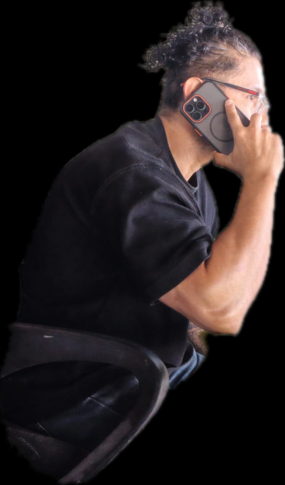

¿CÓMO CONSEGUIR LA GIXXER 150 SF

Dejando el pasado y enfocandose en el futuro
Concéntrate en lo que puedes mejorar hoy y deja atrás lo que ya pasó.
- Mantén el foco y deja el pasado atrás.
- Establece metas claras y alcanzables.
- Trabaja en tu desarrollo personal y profesional.
Consigue la Gixxer 150 SF con esfuerzo y dedicación.
- Mclovin chupaverga
Visitar Wikipedia